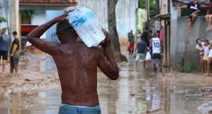
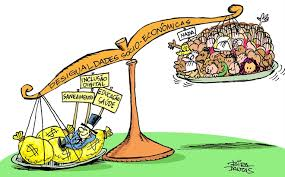
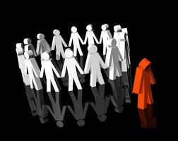
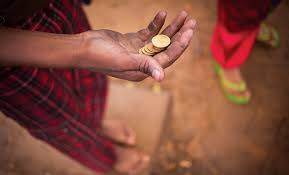

Impactos do Racismo
O racismo tem profundos impactos negativos na sociedade e nos indivíduos. Ele perpetua desigualdades sociais, econômicas e educacionais, afetando principalmente pessoas de raças marginalizadas.
Desigualdade Social
O racismo contribui para a manutenção de desigualdades sociais. Pessoas de raças marginalizadas frequentemente enfrentam barreiras no acesso a oportunidades de emprego, educação e saúde.
Saúde Mental e Física
As vítimas de racismo muitas vezes sofrem de estresse, ansiedade e depressão. A discriminação racial também pode levar a condições de saúde física mais graves, como hipertensão e doenças cardiovasculares.
Exclusão e Isolamento
O racismo pode causar sentimentos de exclusão e isolamento nas vítimas, prejudicando suas relações sociais e seu senso de pertencimento na comunidade.
Impacto Econômico
O racismo tem um impacto econômico significativo, limitando o potencial de crescimento e desenvolvimento de indivíduos e comunidades. A discriminação no local de trabalho pode resultar em salários mais baixos e menos oportunidades de ascensão profissional para minorias raciais.
Prevenção e Combate ao Racismo
É fundamental implementar medidas para prevenir e combater o racismo. Isso inclui a criação de políticas públicas, a promoção da igualdade racial e a conscientização sobre os impactos negativos do racismo.